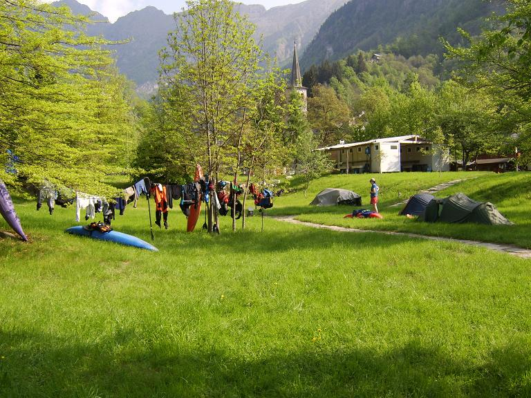
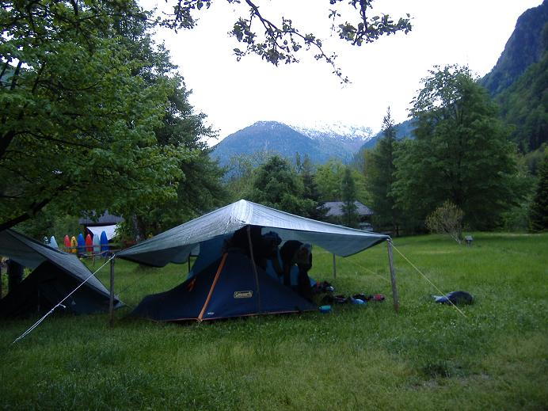
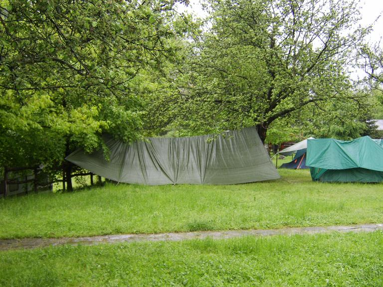
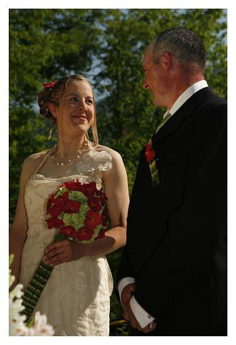
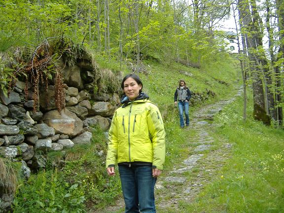
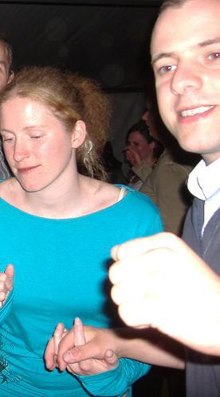
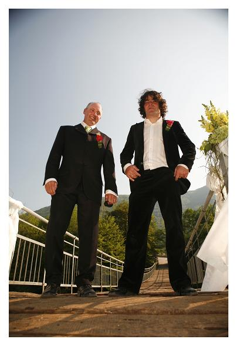

Rain - Satu and Simon Westgarth's wedding - Arrivals
L’indecisione è la chiave della flessibilità
|
|
|
Rain - Satu and Simon Westgarth's wedding - Arrivals |
||
|---|---|---|---|---|
|
L’indecisione è la chiave della flessibilità
|
Rain - lots and lots of rain
On the night after the first Egua trip, it started hopping rain, turning our campsite from this Alpine pastoral idyll...

into this refugee camp...

We went to the local hardware shop and tried out all our Italian on them. We got no response to 'Pizza Napoli?' or 'Due cappuchini?' so in unison we shouted: 'Vendili tela incatramata!' which by complete coincidence turns out to mean 'Sell us tarpaulin!'
For the next few days, as the rain continued to pour, we had cornered the campsite market in weatherproofing materials...

Satu gets married
The other major development of the day was the massive influx of kayakers from Satu's wedding to Simon Westgarth in Slovenia...
Two of Ireland's finest adopted kayakers...

Kala and Kate hiked all the way over the mountains...

They brought Ferg with them, but do you really want to see another photo of Mahoney?
Other arrivals were Ash and her adopted foreigner Ollie, seen here holding hands while dancing at the wedding (photo carefully cropped to remove Ferg - you can still see him sticking out of the back of Ash's neck there)...

In kayaking news, there was a rain-soaked return to the Lower Sesia, but without a camera this time.
Dave Tec showed up at some point also, fresh from his boyband tour, or somewhere...

You just never know with Dave.
Over the next few days there were further arrivals from all over, including vanloads of England's finest and more adopted Irish.